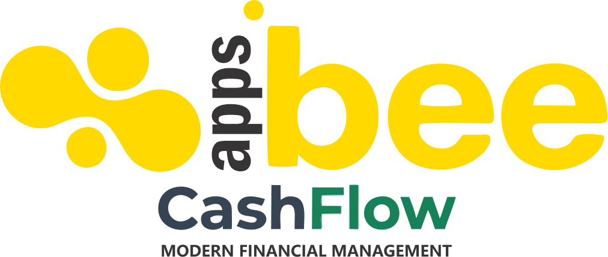

Sepertinya perangkat Anda tidak terhubung ke internet.
Silakan cek koneksi Wi-Fi atau data seluler Anda.
It looks like your device is not connected to the internet.
Please check your Wi-Fi or mobile data.
OFFLINE MODE | CASHFLOW